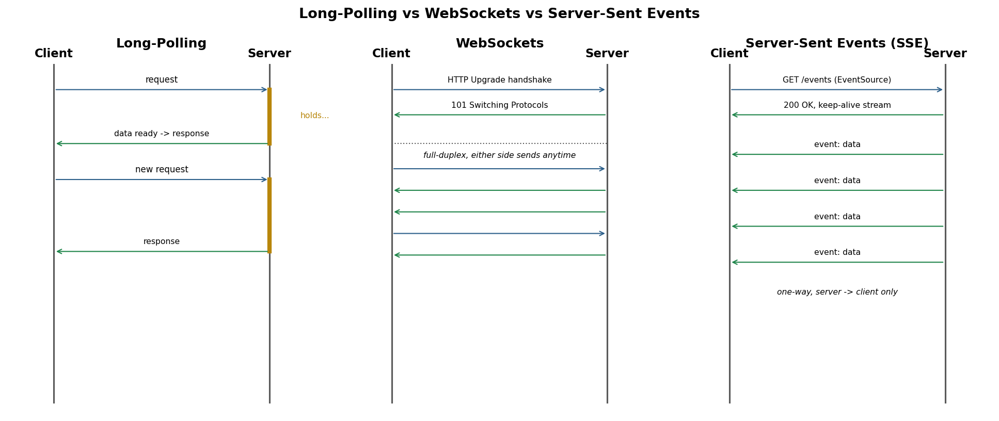
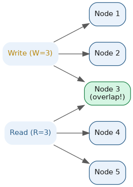
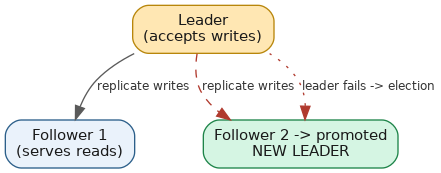

Distributed Systems Primitives
Table of Contents
Overview
Beyond the big architectural patterns, distributed systems interviews often probe a handful of small, foundational building blocks — primitives that show up again and again inside larger patterns like replication, consensus, and leader election. This page groups five of them: how servers push real-time updates to clients, how a cluster agrees a read or write is "good enough" without waiting for every node, how nodes detect that a peer has died, how systems catch silent data corruption, and how a cluster funnels writes through a single node to keep things ordered. Each is short on its own, but each shows up constantly in real infrastructure — often in combination with the others.
Long-Polling vs. WebSockets vs. Server-Sent Events
Regular web communication follows a simple request/response pattern: the client sends an HTTP request, the server sends back one response, and the connection is done. That's fine for loading a page, but it's a poor fit for features that need to push new information to the client as soon as it happens — a chat message arriving, a live sports score updating, a stock price ticking — because plain HTTP gives the server no way to "reach out" to the client on its own. Three techniques have emerged to solve this, each with different trade-offs in complexity, overhead, and how "real-time" they actually are.
Long-polling is the oldest and simplest workaround, built entirely on ordinary HTTP requests. The client sends a request, but instead of responding immediately, the server holds it open and waits until it actually has new data (or until a timeout is reached), then responds; the client processes the data and immediately opens a new request to wait for the next update. This simulates near-real-time updates without needing any special browser support, but every single message requires a brand-new HTTP request with full headers — typically hundreds of bytes of overhead per round trip — and repeatedly re-establishing connections adds latency compared to a truly persistent connection.
WebSockets solve this by upgrading a single HTTP connection into a full-duplex (two-way, simultaneous) persistent TCP connection through an "HTTP Upgrade" handshake at the start. Once that handshake completes, both client and server can send messages to each other at any time over the same open connection, with very little overhead per message — as little as 2 bytes of framing once the connection is established — making WebSockets the best fit for applications needing frequent, low-latency, bidirectional communication, like chat apps, multiplayer games, and collaborative editing tools. The trade-off is operational complexity: WebSocket connections are stateful and long-lived, typically requiring sticky sessions on load balancers (routing a client back to the same server), custom heartbeat/keep-alive logic to detect dead connections, and extra configuration for proxies and corporate firewalls that weren't built with persistent connections in mind. Libraries like Socket.IO build on raw WebSockets to add conveniences like automatic reconnection and fallback to other transports, while services like Pusher and Firebase Realtime Database/Firestore offer fully managed real-time infrastructure so teams don't have to run their own WebSocket servers at all.
Server-Sent Events (SSE) sit in between: they provide a one-directional stream of updates from server to client over a single, plain HTTP connection using the browser's built-in EventSource API, so the server can keep pushing events indefinitely, but the client can't send data back over that channel (it would use a separate normal HTTP request for that, if needed). SSE has less overhead than long-polling (no need to reopen a new HTTP request per message, just a small handful of bytes each time) and, unlike WebSockets, works over plain HTTP with automatic client-side reconnection built into the browser, and it plays especially well with HTTP/2, which multiplexes many SSE streams over a single TCP connection and avoids the old per-domain connection limits of HTTP/1.1. That makes SSE a strong default for one-directional data feeds — live notifications, dashboards, activity feeds, stock tickers — where the server needs to talk to the client far more than vice versa.

| Dimension | Long-Polling | WebSockets | Server-Sent Events (SSE) |
|---|---|---|---|
| Connection type | Repeated HTTP requests, each held open | Single persistent TCP connection (via HTTP Upgrade) | Single persistent HTTP connection |
| Direction | Effectively one-way (server responds when ready) | Full-duplex (both directions simultaneously) | One-way (server to client only) |
| Overhead per message | High (full HTTP headers each round trip) | Very low (~2 bytes per frame after handshake) | Low (~5 bytes per message) |
| Browser support | Universal (plain HTTP/AJAX) | Universal in modern browsers | Universal in modern browsers (via EventSource) |
| Reconnection | Manual (client re-requests each cycle) | Manual (must implement your own reconnect logic) | Automatic, built into the browser |
| Infrastructure complexity | Low, stateless-friendly | Higher (sticky sessions, heartbeats, proxy config) | Low, stateless-friendly |
| Typical use cases | Legacy systems, environments blocking other transports | Chat apps, multiplayer games, collaborative editing | Live notifications, activity feeds, dashboards, stock tickers |
As a general rule of thumb for new systems: use SSE by default for simple server-to-client data pushes since it's simpler to run and scales well over HTTP/2; reach for WebSockets when you genuinely need fast, bidirectional communication; and treat long-polling as a fallback of last resort, useful mainly when older infrastructure or restrictive networks make WebSockets or SSE unavailable. For a deeper treatment of these transports alongside WebRTC and gRPC streaming, see the dedicated real-time communication page in the System Design — Building Units section.
Quorum
When a system stores multiple copies of the same data across several machines (replication, where each copy is a replica), it does so for reliability — if one machine crashes, the data is still available on the others. But replication creates a new problem: how do you know a "successful" write has actually gone far enough, and how do you make sure a later read doesn't return stale data? If you only wait for one replica to confirm a write before telling the client "done," you're exposed — that replica could crash moments later, and every other replica in the cluster would still hold the old value.
The naive fix is to require every single replica to acknowledge a write, and to read from every replica too. That guarantees correctness, but it's fragile and slow: if a cluster has 5 replicas and just 1 is temporarily unreachable (network hiccup, restart, GC pause), every write grinds to a halt until that node comes back. In real systems, nodes going down or lagging isn't an edge case — it's a constant, expected condition at scale. Requiring "everyone must respond" trades away availability for perfect consistency, and most real applications can't tolerate that trade-off — this tension is the same one described by the CAP theorem, which says a distributed system can't simultaneously guarantee perfect Consistency, Availability, and Partition tolerance.
What's needed is a middle ground: a rule that tolerates some nodes being slow or down while still mathematically guaranteeing a read will never miss the latest write. That's the problem quorum was invented to solve — instead of requiring all nodes or trusting just one, the system agrees in advance on a minimum number of nodes that must participate in a write and a minimum number that must participate in a read, chosen so their results are guaranteed to overlap.
A quorum is the minimum number of nodes that must agree to, or participate in, an operation for it to be considered valid. In replicated data, this is usually expressed with three numbers: N, the total number of replicas holding a copy of the data; W, the number of replicas that must acknowledge a write before it's considered successful; and R, the number of replicas that must respond to a read before its result is returned to the client.

The famous rule tying these together is W + R > N. If this inequality holds, any set of R nodes you read from is mathematically guaranteed to overlap with any set of W nodes that received the latest write — because you can't pick R and W nodes out of a pool of N without at least one node being in both groups. That overlapping node is guaranteed to hold the most recent value, so a properly designed read will always be able to detect and return the freshest data (usually by comparing version numbers or timestamps across the responses and picking the newest). If instead W + R ≤ N, a read could hit only nodes that missed the last write and might return stale data — this is called eventual consistency, since the replicas will all agree eventually, just not instantly.
The exact values of W and R are tunable, and different choices suit different needs: setting W = N (write to everyone) and R = 1 makes reads very fast but writes slow and fragile; W = 1 and R = N does the opposite; a common balanced choice is a majority quorum, where W and R are both roughly N/2 + 1, tolerating node failures while still guaranteeing overlap. Apache Cassandra exposes this directly as tunable "consistency levels" per query (ONE, QUORUM, ALL, LOCAL_QUORUM), letting engineers choose the trade-off per read or write. Amazon DynamoDB defaults to eventually consistent reads (essentially R = 1, fast but possibly stale) but offers a "strongly consistent read" option that consults a quorum of replicas to guarantee the latest value. It's worth noting that majority quorums (more than half the nodes) reappear later under leader election — algorithms like Raft and ZooKeeper's ZAB protocol also require a majority vote to elect a leader, for exactly the same overlap-guarantee reasoning.
Heartbeat
In a distributed system, one machine can't simply "look" at another machine to see if it's still working — the only way to know anything about a remote node is by exchanging messages over the network, and the network itself can lie to you (a slow node and a dead node can look identical from the outside). A heartbeat is the standard solution: a small, lightweight message a node sends out periodically — essentially saying "I'm still alive" — to another node or to a central coordinator responsible for tracking cluster health. If the receiver stops getting these messages within an expected time window, it assumes the sender has failed and takes corrective action, such as removing it from the pool of healthy nodes, rerouting traffic away from it, or triggering a leader election to replace it.
The mechanism has two key tunable numbers: the heartbeat interval (how often the "I'm alive" message is sent) and the timeout (how long the receiver waits without a heartbeat before declaring the sender dead). Getting this balance right matters: too short a timeout produces false alarms, treating a node as dead just because of a brief network delay or a garbage-collection pause — a problem often called "flapping." Too long a timeout means real failures take longer to notice, leaving the system serving requests to a dead node or delaying failover.
Real systems use heartbeats everywhere. Kubernetes relies on the kubelet (the agent running on each node) to regularly report node status to the API server, and separately uses liveness and readiness probes to decide whether a specific container is healthy enough to keep receiving traffic — if the probe stops succeeding, Kubernetes restarts the container or removes it from load-balancing. Apache Kafka brokers historically sent heartbeats to ZooKeeper through session pings; if ZooKeeper doesn't hear from a broker within its configured zookeeper.session.timeout.ms, it treats the broker as gone and triggers partition leader re-election (Kafka's newer KRaft mode does something conceptually similar internally, without ZooKeeper). And in Raft-based systems like etcd, the elected leader sends heartbeat messages to its followers on a short, fixed interval — commonly every 100 milliseconds — and if a follower doesn't hear from the leader within its election timeout (often around 1,000 milliseconds), it assumes the leader has failed and starts a new election to replace it.
Checksum
A checksum is a small, fixed-size value calculated from a larger piece of data using a mathematical function, used to verify the data hasn't been accidentally changed or corrupted. The idea is simple: before sending or storing a file, you run it through the checksum function to get a short code (say, 32 or 256 bits long). Later, when the data is received or read back, you recompute the checksum on it — if the two values match, the data almost certainly arrived intact; if they don't match, something changed along the way, whether from a flaky network connection, a failing disk, or a corrupted transfer.
It's useful to distinguish two flavors of this idea. Simple checksums like CRC32 (Cyclic Redundancy Check) are designed purely to catch accidental corruption — random bit flips caused by noisy cables, faulty memory, or storage errors — and are extremely fast to compute, but offer no protection against someone deliberately tampering with the data, since it's relatively easy to engineer a different input that produces the same CRC32 value. Cryptographic hash functions like MD5 and SHA-256, on the other hand, are built with a much stronger goal: it should be computationally infeasible to find two different inputs that produce the same output (collision resistance), and you shouldn't be able to work backward from the hash to recover the original data. MD5 is now considered broken for security purposes because researchers found practical ways to create collisions, so it's still used for non-security integrity checks but no longer trusted where tampering is a concern; SHA-256, part of the SHA-2 family, has no known practical collisions and underpins much of today's security infrastructure, including TLS certificates and Git's move toward stronger hashing.
Checksums show up throughout the systems we rely on every day:
- TCP/IP networking — every TCP segment and IP packet includes a checksum field. The receiving side recomputes it, and if the numbers don't match, the packet is silently dropped so the sender can retransmit it — a basic, constant defense against noisy or lossy network links.
- Amazon S3 — computes checksums during upload and storage (supporting CRC32, CRC32C, CRC64NVME, SHA-1, and SHA-256) so customers can verify an object hasn't been silently corrupted anywhere between the client and S3's storage, and back again.
- Git — every commit, file, and directory is identified by a hash of its content. Changing even a single character anywhere in a file completely changes its hash, letting Git detect corruption, deduplicate identical content, and give every object a unique, verifiable fingerprint — the basis of "content-addressable storage."
- Software downloads — many projects publish a SHA-256 checksum alongside an installer or package so users can confirm the file they downloaded matches exactly what the publisher built, and wasn't corrupted or swapped out in transit.
- Databases and file systems — systems like ZFS and PostgreSQL store checksums alongside data blocks to catch "silent" disk corruption (sometimes called bit rot) that wouldn't otherwise be noticed until the data is read and found to be wrong.
The general rule of thumb: use a fast, simple checksum like CRC32 when you only need to catch accidental corruption and speed matters (network packets, basic file transfer checks); reach for a cryptographic hash like SHA-256 whenever you need protection against deliberate tampering, or want a strong, unique identity for a piece of content — exactly why systems like Git, Docker (image digests), and package managers all rely on cryptographic hashing rather than simple checksums.
Leader and Follower
The leader-follower pattern (sometimes called leader-election or primary-replica) is a way of organizing a cluster of nodes that all store copies of the same data so writes stay consistent and ordered. One node in the cluster is designated the leader (or primary), and every other node becomes a follower (or replica). All write requests are routed to the leader — it decides the order in which writes happen, applies them locally, and then replicates them out to the followers, typically through a replicated log (an ordered, append-only record of every change). Followers apply the same changes in the same order and can usually serve read requests directly, spreading out read load while staying ready to take over if the leader ever fails.
This pattern exists to avoid conflicts. If any node in a cluster could accept writes independently, two clients could write conflicting updates to two different nodes at the same moment, and the system would have to somehow reconcile those conflicting versions — a genuinely hard problem. By funneling all writes through a single leader, the system gets a natural, unambiguous order for every change, making consistency far simpler to reason about. That raises a new question: what happens when the leader itself fails? That's where leader election comes in — a formal process the remaining nodes use to agree on a new leader. Well-known algorithms that solve this include Raft, Paxos, and ZooKeeper's ZAB (ZooKeeper Atomic Broadcast) protocol. In Raft, for example, each node normally sits quietly as a follower; if it stops receiving heartbeats from a leader within a randomized timeout window, it becomes a "candidate," requests votes from its peers, and if it wins a majority (a quorum, tying back to the earlier section) it becomes the new leader for that "term."

This pattern is everywhere in real infrastructure. etcd and HashiCorp Consul both use Raft directly to elect a leader among their own nodes — and since Kubernetes stores all of its cluster state in etcd, Kubernetes' entire control plane ultimately depends on this leader-election mechanism working correctly. Apache Kafka elects a leader broker for every partition of every topic — all reads and writes for that partition go through its leader broker, while other replica brokers follow along; older Kafka versions relied on ZooKeeper to manage this election, while the newer KRaft mode replaced ZooKeeper with a built-in Raft-based controller quorum. Traditional relational databases like MySQL and PostgreSQL use primary-replica replication for read scaling and failover in much the same spirit. Redis Sentinel performs leader election to promote a new master if the current one dies. The trade-offs are consistent across all these systems: the leader is a natural bottleneck for writes and a single point of failure until a new one is elected, and a failover always introduces some brief window of unavailability while the election completes; systems guard against two nodes both believing they're the leader at once (a dangerous condition called "split brain") by attaching a term or epoch number to each election and requiring a majority quorum vote, so only one leader can ever hold power at a given term.